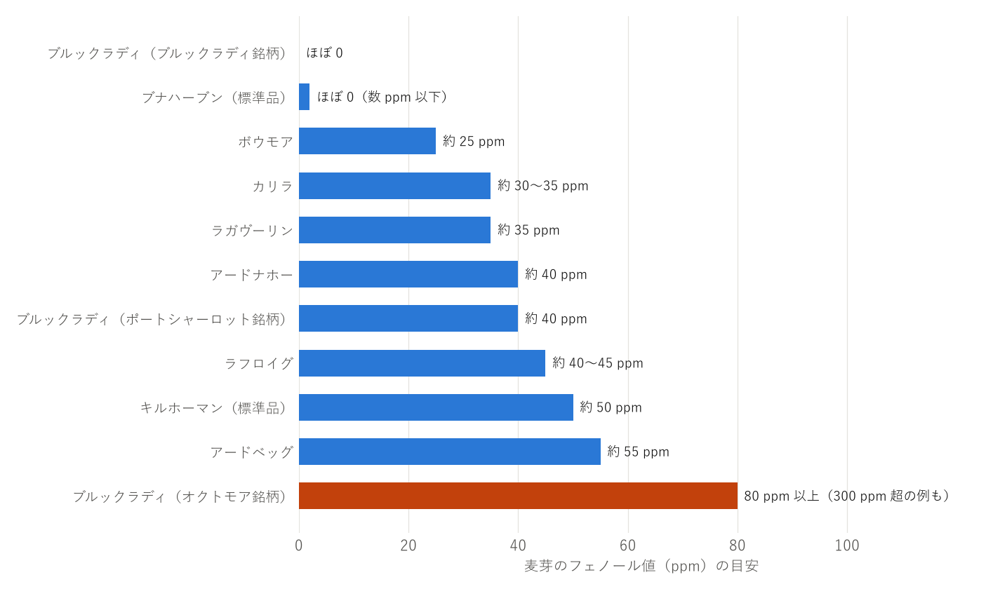

第 5 章 ピートとスモーキーさ
アイラウイスキーを特徴付けるスモーキーさは、ピートから生まれる。本章では、ピートがどのように麦芽に香りを付けるのか、スモーキーさの強さをどう表すのか、そして香りの正体は何かを説明する。
ピートとは
ピートは、枯れたコケや草などの植物が、湿地で十分に分解されないまま積み重なってできたものである（第 3 章 アイラ島という産地）。積み重なる速さは 1 年に 1 mm 程度と言われ、深い層は数千年かけてできている。
ピートは、湿地から四角いブロック状に切り出し、野外で数か月かけて乾かしてから燃料にする。燃やすと、炎はあまり上がらず、くすぶりながら濃い煙を出す。この煙に含まれる成分が、麦芽に香りを付ける。
麦芽に煙の香りを付ける
ピートの香りは、製麦の最後の工程である乾燥のときに付けられる（図 6）。
図 6 ピートを焚いた麦芽ができるまで
発芽させた麦芽をキルン（乾燥室）の床に広げ、下から熱と煙を当てて乾かす。煙の成分は、麦芽の表面が湿っているうちによく付く。そのため、乾燥の初めの段階でピートを焚いて煙を当て、その後は熱風で乾燥を仕上げるのが一般的である。ピートを焚く時間や量を変えることで、香りの強さを調整できる。
現在、多くの蒸留所は自分で製麦をせず、専門の製麦所から、指定した強さでピートを焚いた麦芽を買っている。アイラ島では、ポートエレンの製麦所がこの役割を担っている。一部の蒸留所は、伝統的な方法で自ら製麦も行っている（第 6 章 製法の特徴）。
フェノール値
スモーキーさの強さの目安として、フェノール値が使われる。これは、麦芽に含まれる「フェノール類」と呼ばれる香りの成分の濃度を表した値で、単位は ppm（100 万分の 1）である。
主な蒸留所が使う麦芽のフェノール値の目安を図 7に示す。


図 7 麦芽のフェノール値の目安（公表値や一般に言われる値。時期や製品によって異なる）
フェノール値を見るときには、次の点に注意する。
麦芽の値であり、製品の値ではない：一般に公表されているのは、原料の麦芽の値である。麦芽のフェノール類は、糖化・発酵・蒸留の過程で多くが失われ、ニューメイクに残るのはその一部である。さらに熟成の間にも、煙の香りは少しずつ穏やかになる。
蒸留の仕方で残り方が変わる：フェノール類の多くは、蒸留の後半に出てくる。そのため、ミドルカットで後半の部分をどこまで取り込むかによって、同じ麦芽でもスモーキーさの残り方が変わる。
測り方によって値が違う：フェノール値の測定方法は 1 つではなく、方法によって数値が変わる。蒸留所どうしの値を厳密に比べることはできない。
数字と感じ方は比例しない：同じフェノール値でも、樽や熟成年数、ほかの香りとのバランスによって、スモーキーさの感じ方は大きく変わる（第 12 章 よくある誤解）。
フェノール値は、あくまで「おおよその強さの目安」として使うのがよい。
香りの正体
ピートの煙には、さまざまな香りの成分が含まれる。ウイスキーのスモーキーさに関わる主な成分は、フェノール類と呼ばれる化合物のグループである（表 6）。
成分 |
香りの傾向 |
|---|---|
フェノール |
消毒薬や薬品のような香り |
クレゾール |
薬品、タール、革のような香り |
グアイアコール |
焚き火や燻製のような、煙そのものの香り |
キシレノール |
薬品、インクのような香り |
アイラウイスキーの香りを、日本では胃腸薬の「正露丸」にたとえることがある。正露丸の主成分である木クレオソートには、グアイアコールやクレゾールが含まれており、香りの成分の一部が実際に共通している。
ピートの産地による違い
ピートの煙に含まれる成分の比率は、ピートの産地によって違うとされる。ピートを作った植物の種類（コケ・草・木の根など）が、産地によって違うためである。アイラ島のピートは、本土のピートに比べて薬品のような香りの成分が多い煙を出すという研究報告もある。
ただし、麦芽をどこで切り出したピートで燻したかは、製品のラベルからは分からないことが多い。また、同じピートを使っても、ピートを焚く温度や時間によって煙の成分は変わる。アイラの個性は、ピートの産地だけでなく、蒸留所ごとの製法の積み重ねから生まれていると考えるのがよい。
「潮」と「ヨード」の香り
アイラウイスキーの香りは、「潮の香り」「海藻」「ヨード（ヨウ素）」などと表現されることも多い。その由来については、次のような説がある。
ピートの説：海に近いピートには、潮風や海藻の成分が含まれており、それが煙を通して麦芽に移るという説。
熟成庫の説：海辺の熟成庫で寝かせる間に、潮風の成分が樽を通して入るという説（第 3 章 アイラ島という産地）。
フェノール類の説：「ヨード」と感じる香りの多くは、実際にはヨウ素ではなく、フェノール類による薬品のような香りであるという説。
どの説がどの程度正しいのかは、はっきり分かっていない。ただ、「ヨード」や「潮」という言葉は、アイラウイスキーを表す言葉として広く使われている。香りの表現については第 9 章 香味の特徴とテイスティングで改めて扱う。